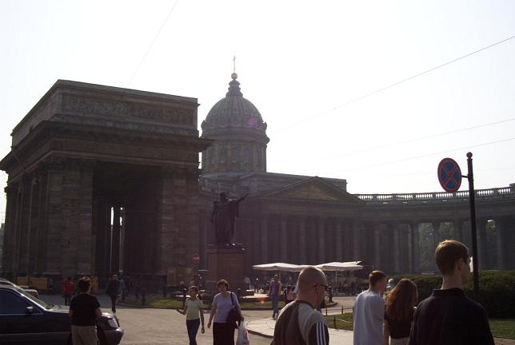
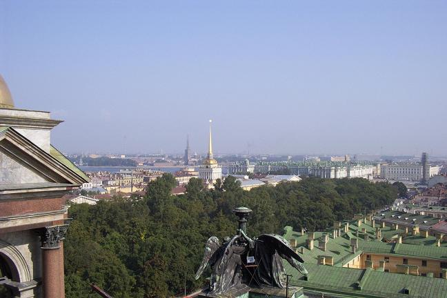
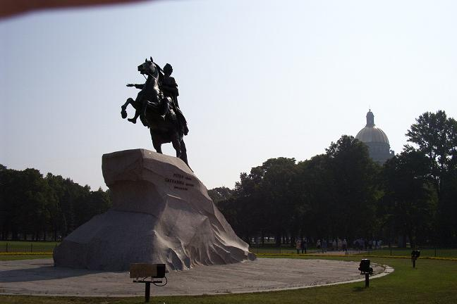
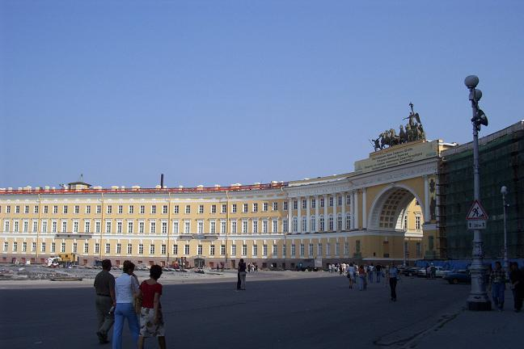

The next picture is of Kazan Cathedral, with a semi-circular colonnade inspired by St. Peter’s Basilica in the Vatican.

Next is a view of the city’s historic center from atop St. Isaac’s Cathedral, with the gilded spire of the old Admiralty, the former headquarters of the Russian navy.

Next comes a picture of the most famous monument to Peter the Great, the city’s founder, called the Bronze Horseman.

Finally is a beautiful semi-circular building that faces a square opposite the Winter Palace.

Back to St. Petersburg Section
Go to the Homepage